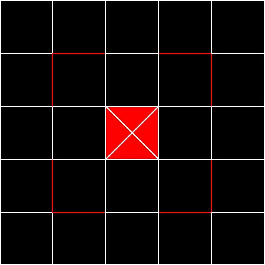

This is a board game made-up by a couple of brilliant minds.
MOHAR consists of 2 players each having 5 pawns. This game is made in C amd has the following basic moves :
The main motive of the game is to form triplets using the pawns.
And once a triplet is formed at three particular locations, next time you will not allowed to form triplets there.
There is a space right in the middle of the 5X5 board in which the player is not allowed to place the pawns.
The restriction a player will be facing is, a triplet cannot be formed trough walls. It means a wall cannot obstruct the trio.
A player wins when 3 such trio forms at three different triplet of locations.
Or lets say when the opponent is left with only 2 pawns, the other player wins.